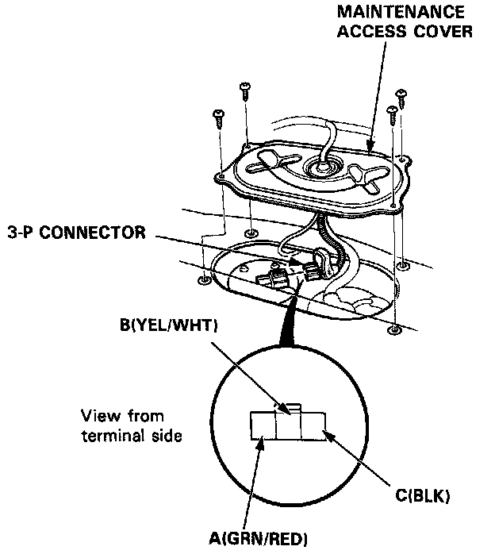

Fuel Gauge: Testing and Inspection

Fuel Gauge Test
^ Check the No.13 (15 A) fuse in the underdash fuse box before testing.
1. Remove the maintenance access cover.
2. Disconnect the 3-P connector from the fuel gauge sending unit.
3. Connect the voltmeter positive probe to the B (YEL/WHT) terminal and the negative probe to the C (BLK) terminal, then turn the ignition switch ON. There should be between 5 and 8V.
^ If the voltage is as specified, go to step 4.
^ If the voltage is not as specified, check for:
- An open in the YEL, YEL/WHT or BLK wire.
- Poor ground (G305).
4. Turn the ignition switch OFF. Attach a jumper wire between the B (YEL/WHT) and C (BLK) terminals. Turn the ignition switch ON. Check that the pointer of the fuel gauge starts moving toward "F" mark.
CAUTION: Turn the ignition switch OFF before the pointer reaches "F" on the gauge dial. Failure to turn the ignition switch OFF before the pointer reaches the "F" mark may cause damage to the fuel gauge.
NOTE: The fuel gauge is a bobbin (cross coil) type, hence the fuel level is continuously indicated even when the ignition switch is OFF, and the pointer moves more slowly than that of a bimetal type.
^ If the pointer of the fuel gauge does not swing at all, replace the gauge.
^ Inspect the fuel gauge sending unit if the gauge is OK.